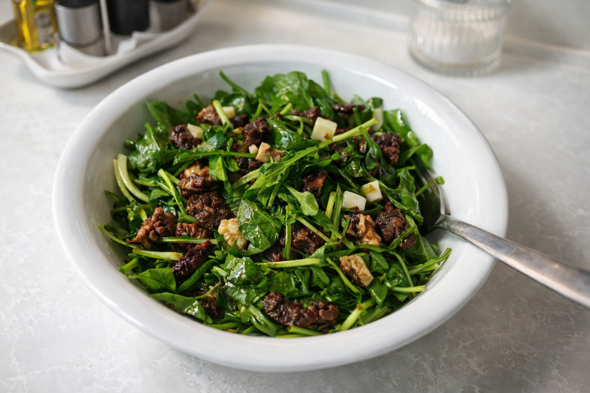

Tereyağında mühürlenmiş ılık kuzu göbeği mantarlarının, bebek roka tazeliği ve Grana Padano peynirinin kristalize dokusuyla eşsiz buluşması.

Malzemeler
Ana Bileşenler
100g Taze Kuzu Göbeği Mantarı
40g Bebek Roka (Baby Arugula)
15g Grana Padano Peyniri
2 tam Ceviz İçi (iri parçalanmış)
Sote ve Soslama
15g Tereyağı & 1 çay kaşığı Zeytinyağı
1.5 yemek kaşığı Sızma Zeytinyağı (Sos için)
1 tatlı kaşığı Limon Suyu & Yarım çay kaşığı Bal
Deniz Tuzu & Bir dal taze kekik
Hazırlanış
1. Zeytinyağı, limon suyu, bal ve tuzu bir kapta çırparak emülsiyon haline getirin.
2. Rokaları hazırladığınız sosun yarısı ile hafifçe harmanlayıp servis tabağına taban olarak yayın.
3. Tavada tereyağı ve zeytinyağını ısıtıp köpürtün. Mantarları yüksek ateşte 4-5 dakika dışı kıtırlaşana kadar soteleyin.
4. Ocaktan almadan 1 dakika önce tuzu ekleyin. Mantarları tavada 30 saniye bekleterek ilk ısısının düşmesini sağlayın.
5. Ilık mantarları rokanın üzerine yerleştirin. Kalan sosu mantarların üzerinde gezdirin.
6. Hafifçe kavurduğunuz cevizleri serpin ve Grana Padano yapraklarını sebze soyacağı ile üzerine tıraşlayarak tamamlayın.
Notlar
• Kuzu göbeği mantarı gözenekli yapısı nedeniyle rokanın dokusunu saniyeler içinde yumuşatabilir; bu yüzden mantarı tavadan alır almaz değil, 30 saniye bekledikten sonra ekleyin.
• Grana Padano yerine İzmir Tulumu kullanılacaksa, peynirin baskın tuz oranından dolayı miktar yarıya indirilmeli ve tuz ilavesi dikkatli yapılmalıdır.
• Cevizlerin yağsız tavada 1-2 dakika kavrulması, mantarın topraksı aromasıyla kuruyemişin yağ yapısını kusursuzca birleştirir.
• Görselde yer alan salatada Grana Padano o gün mevcut olmadığı için İzmir tulumu kullanılmıştır.
• Reçetede bebek roka önerilse de, görseldeki sunumda standart roka tercih edilmiştir.
Kalori Tablosu (1 Porsiyon)
Bileşen
Miktar / Detay
Kalori (kcal)
Kuzu Göbeği Mantarı
100g
~31
Tereyağı & Zeytinyağı
Sote ve Sos
~284
Grana Padano
15g
~58
Ceviz & Diğer
Karma
~90
TOPLAM
1 Porsiyon
~463 kcal
Gastronomik Değerlendirme
Denge Analizi: Rokanın doğal acılığı (peppery), tereyağlı mantarın zenginliğini dengelerken; bal ve limon dokunuşu asiditeyi kontrol altına alarak damak yorgunluğunu engeller.
Doku Kontrastı: Yumuşak ve etsi mantar yapısı, çıtır roka ve kristalize Grana Padano parçalarıyla birleşerek çok katmanlı bir ağız hissi (mouthfeel) sunar.